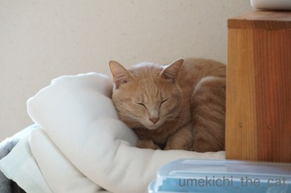
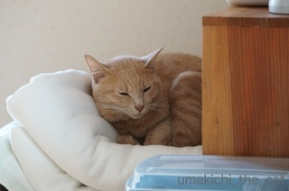
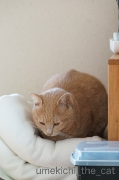
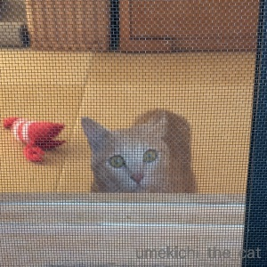
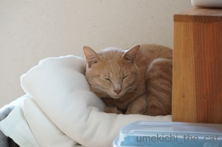
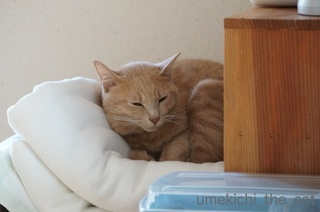
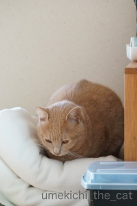
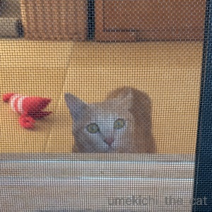

お洗濯物乗り猫＆脱走猫 [梅吉]
最低気温が一ケタになってきたので本格的に冬支度。
お洗濯して取り込んでおいた夏物のタオルケットをしまおうとすると・・・・

ああ、やられました〜。
梅吉さん、それはしまいたいのですが。

動く気配ゼロ。
寝入り始めたので今のうちに出かけてしまおうとすると・・・・

![[猫]](https://blog.ss-blog.jp/_images_e/101.gif) ん？なんや
ん？なんや

あやしいけはいや

わしをだしぬこうなんてみらいえいごうむりやで

わしのでばんやな（みょ〜〜〜ん）
出かけようと身支度を始めると寝入っていても必ず起きてきていつのまにか後ろに控えています( ﾟдﾟ)
出かけに必ずカリカリを２〜３粒与えているのですが（その隙に家から出る。そうしないと後追いを振り切れない）
もらえるまでにゃ〜にゃ〜にゃ〜にゃ〜まとわりついて大変です。
簡単に家から出たいよ〜。
 ↑ガブッと一押し↑
↑ガブッと一押し↑
ベランダ作業していると窓伝いに追いかけてくる梅吉さん。

不可能と思っていた高くて狭いところを通って先日ベランダから脱走。
運良くお隣さんが教えてくれたのですぐに捕獲したのですがびっくりした〜。
おとーさんがベランダのフェンスをぐるりとネットで囲いましたとさ。
ガードはしましたが目は離せないな・・・
お洗濯して取り込んでおいた夏物のタオルケットをしまおうとすると・・・・

ああ、やられました〜。
梅吉さん、それはしまいたいのですが。

動く気配ゼロ。
寝入り始めたので今のうちに出かけてしまおうとすると・・・・




出かけようと身支度を始めると寝入っていても必ず起きてきていつのまにか後ろに控えています( ﾟдﾟ)
出かけに必ずカリカリを２〜３粒与えているのですが（その隙に家から出る。そうしないと後追いを振り切れない）
もらえるまでにゃ〜にゃ〜にゃ〜にゃ〜まとわりついて大変です。
簡単に家から出たいよ〜。
ベランダ作業していると窓伝いに追いかけてくる梅吉さん。

不可能と思っていた高くて狭いところを通って先日ベランダから脱走。
運良くお隣さんが教えてくれたのですぐに捕獲したのですがびっくりした〜。
おとーさんがベランダのフェンスをぐるりとネットで囲いましたとさ。
ガードはしましたが目は離せないな・・・

カフェオレ色の梅吉

梅吉 2023年8月10日 永眠


梅吉と出会った譲渡会

犬猫の理由なき殺処分ゼロ
妄想広告
UMEKICHI 光

爆発的に早い！
時々攻撃的！
Thanks to Mr.Boss365
爆発的に早い！
時々攻撃的！
Thanks to Mr.Boss365

お、初脱走ですか:-)
by tama (2016-11-03 15:32)
tamaさん＞そうです( ･̆ˍ･̆ )やられました〜。
by ちぃ (2016-11-03 16:46)
だ、脱走？
にゃんこは身軽なので犬より簡単に脱走しそう…。
ウチの犬は犬の中では身軽な犬種ですので、脱走はすごく気をつけてます！(^_^;)
by ルディパパ (2016-11-03 18:05)
にゃんこのことはよくわかってないのですが
いったん家を出てしまうと迷子になってしまうんでしょうか？？？
by よーちゃん (2016-11-03 19:37)
ルディパパさん＞にゃんこは狭いところもどんどん行ってしまうので怖いです。
今回の脱走はワタクシの不注意もあったのですが、身体能力を甘く見ていました。反省、反省。
わんこは呼ぶと止まったり、戻ってきたりしそうですがにゃんこは呼んだって戻ってこないから・・・・今後は十分気をつけます。
よーちゃんさん＞にゃんこの性質にもよりますが梅吉の場合
脱走→ひゃっほ〜→ハイになって走る→行方不明が考えられます。
戸建だと戻ってきたりしますが、我が家はマンションの上階。
地上に下りてしまうとほぼ戻ってこられないと思います。
飼い主が十分気をつけないといけないのです。今回は寿命が縮む思いでした。涙
by ちぃ (2016-11-03 20:06)
脱走は怖いですね・・・
でも大事にいたらなくて良かったです♪
網戸越しに覗いている梅吉さんのお顔がまた可愛いです(#^.^#)
by きぃ (2016-11-03 20:23)
梅吉さん、スティーヴ・マックイーンですな。^^;
by yes_hama (2016-11-03 21:14)
梅吉ちゃん、大冒険しましたね。味をしめてないといいけど。うちも子猫時代は、マジシャンのごとく脱走されてました。抜け穴の多い家だったのが敗因ですが。
by 千晶 (2016-11-03 22:30)
お猫様は「まさか？」って思うことをしてくれちゃいますよねぇ(⌒-⌒; )
そういうところ、本当に賢いというか悪知恵が働くというか(*_*)
梅吉くん、無事に戻れて本当に良かったです( ^ω^ )
by ニッキー (2016-11-04 08:29)
出がけにカリカリ…もしかして常にポッケにカリカリが？
大変そうですが、愛されてらっしゃるんですね、可愛い梅吉くん！
脱走…何事もなくてよかったですね(*´︶`*)❤
うちはサンルームの上部に隙間があって、そこから脱出してたことがありました。屋根にうちの猫とそっくりな猫がおるなあと思ったらうちの猫で、2階のベランダから帰還しました…家って意外と抜け穴があるんですね。
by BillK-ko (2016-11-04 10:37)
家も脱走されたことありますよ、
マンションの３階なんですが、ベランダの手すり越しに
隣の家へお邪魔しちゃって、
キャリーケース持って引取に行きました。
１匹いないと分かったとき
心臓がバクバクしました(>_<)
無事見つかってホッとしました。
by さとみ (2016-11-04 14:04)
うちなんか「出かけてくるよ～」と言っても顔もあげません(T_T)大変だろうけど後追いされてみたい(>_<)
by palpal (2016-11-04 15:23)
梅吉さん、気持ちよさそうですね〜＾＾
タオルケットごとひざに乗っけたい
by じゅらまろ (2016-11-04 17:16)
きぃさん＞網戸越しの梅吉なかなかでしょう？笑（親バカです）
打って変わって、脱走時はいたずらっ子の顔してました( ꒪ω꒪)
yes_hamaさん＞あんなに華麗に大脱走されたら！困りますっ！！笑
千晶さん＞味しめちゃったんです・・・ガード後厳重な監視の下ベランダに出してみると、ダダーッと脱走経路に走っていきました。
塞がれた経路を見て「なんでやねん」って顔していましたが
虎視眈々と突破する手立てを考えている風だったので即お家イン。
結論！出さないのが一番！！
ニッキーさん＞そうそう、変なところが賢いのです。
家の中から脱走経路をじっと見ていることがあるのですが
次の策を考えている様子です(｣ﾟﾛﾟ)｣賢い！梅吉！！
BillK-koさん＞にゃんこは「ツンデレ」なのでしょうが
梅吉は「ツン」がほぼありません・・・嬉しいやら、ちょっと困るやら。
BillK-ko宅でも脱走が・・・外でうちの子を見た時アドレナリンやら冷や汗やら
いろんなもんがドバッとでませんでしたか？
ワタクシは大量噴出でした〜。
さとみさん＞さとみさんも脱走体験をお持ちでしたか。
ワタクシはインターホンで「お宅のにゃんこ外にいてますよ〜」と
言われた瞬間心臓止まりました・・・。
palpalさん＞大変、大変と言いながら後追いされなくなると「お〜い」と
呼んでいる自分が見えます・・・笑。
by ちぃ (2016-11-04 17:27)
じゅらまろさん＞取り込んだ洗濯物に興味なんて示さなかったのに
寒さゆえの行動でしょうか。
タオルケットごと湯たんぽがわりにどうぞ〜笑。
by ちぃ (2016-11-04 17:32)
脱走しちゃったのですね！
またやってやるぜ！って顔してますね（笑）
by リュカ (2016-11-04 18:42)
梅吉、かわいいですね。寒くなってきたので、暖かいところがいいのかな。(^^)
by はな (2016-11-05 07:55)
気持ちよさそうね＾＾
一緒にあたたかいフワフワの上で寝たいわ
出かけるのに、そんな苦労があったのね(笑)
by みいこ (2016-11-05 13:17)
リュカさん＞プチ冒険楽しかったのかな、きっと次も狙ってます・・・(-.-;)
はなさん＞こんなに寒がりだった？と思うほどひだまりや毛布に寄っていく梅吉です。
みいこさん＞出かけるの大変なの・・・靴は家の中で履けない。
つっかけて、外できちんと履きます。
誰か見てたら変な人だと思われてるの間違いなし！
by ちぃ (2016-11-05 13:53)
わぁ、かわいい♡ ちぃさんが大好きなんですね(^.^)
ウチの子たちは、私が出かけよーが、なにしよーが、興味なっしんぐです(^_^;
脱走、早めに気づいてよかったですね!!!
by のらん (2016-11-05 14:26)
のらんさん＞脱走お隣さんのGJでした。
家から走り出てきたワタクシを見て梅吉は「おかーさんなになわててんの？」
って顔してました。」きぃ〜〜〜怒。
by ちぃ (2016-11-05 15:35)